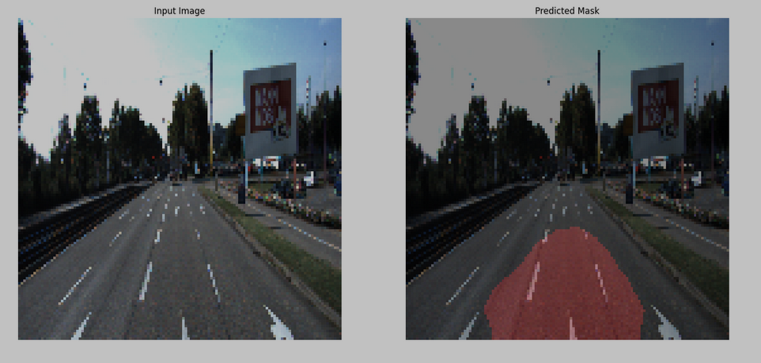
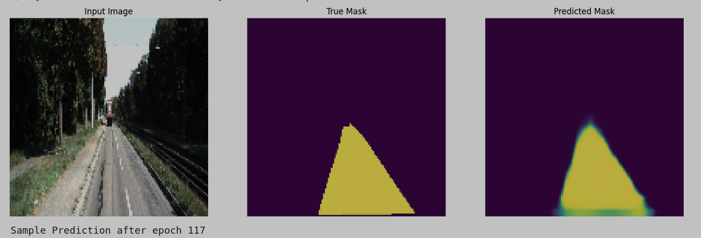
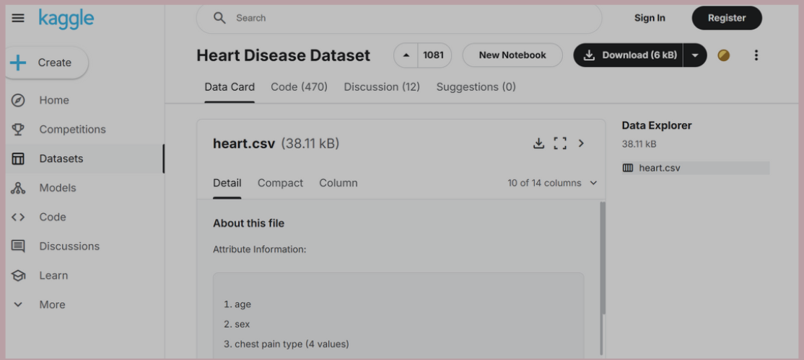
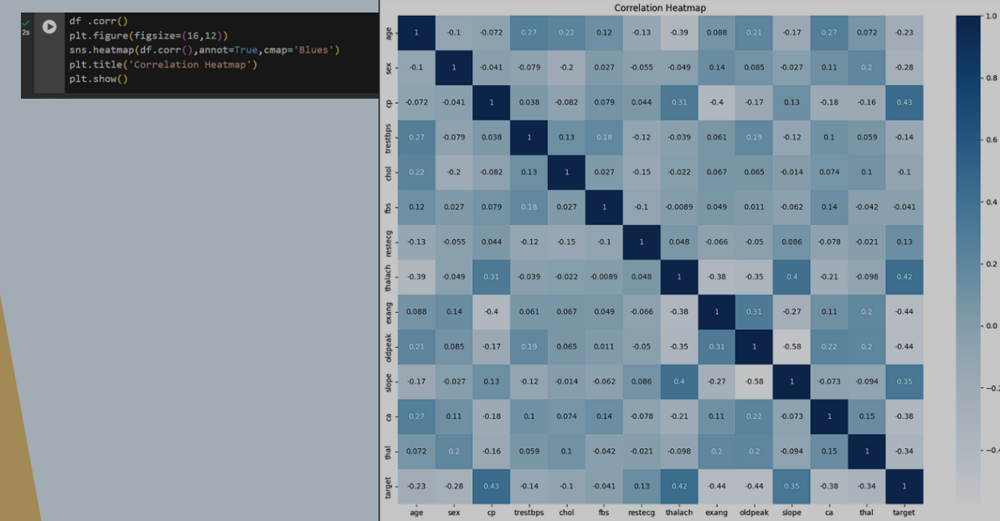
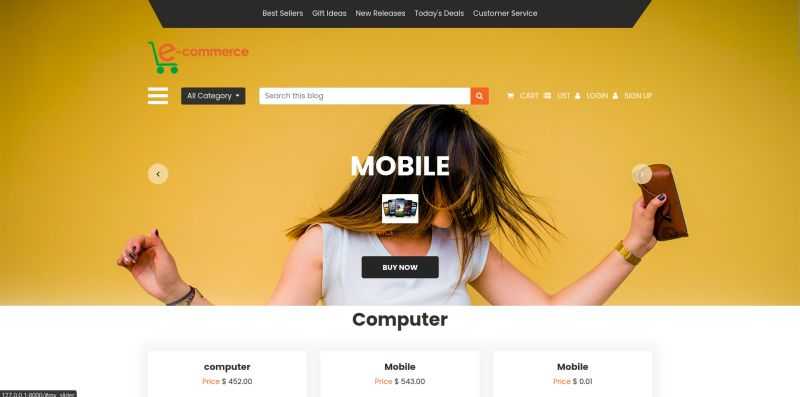
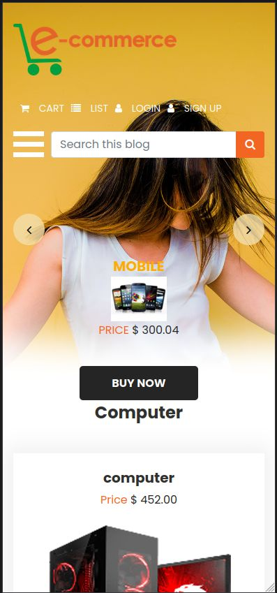

Resume
Data Science Engineer with 1 year of experience, skilled in C++, Python, SQL and Machine Learning. Proven track record of building solid projects, including GenAI Chat-Bot, Heart Disease Prediction Model and a File Manager System Using Python OS Module. Proficient in version control with Git and GitHub. Additionally experienced in HTML CSS and Javascript, with API implementation in real projects. Currently exploring Deep Learning to expand skill sets and future career opportunities.
Projects
Road Lane Line Detection
- Technologies Used: Python, OpenCV, NumPy
- Description: Developed a lane detection system that uses computer vision techniques to identify lane markings in real-time from images and video streams. The system enhances road safety by providing accurate lane boundary detection for advanced driver assistance systems (ADAS) and autonomous vehicles.
- Key Contributions: Implemented edge detection, region selection, and Hough Transform methods to accurately detect both straight and curved lane lines, ensuring robust performance in various driving conditions.
- Project Link
-  
Heart Health Predictor
- Technologies Used: Python, Scikit-learn, Pandas, NumPy
- Description: Developed a machine learning model to predict heart disease likelihood using patient health data, such as cholesterol levels, blood pressure, and age.
- Key Contributions: Pre-processed the dataset, implemented various machine learning algorithms, and optimized model performance through hyperparameter tuning and cross-validation, achieving high accuracy in heart disease prediction.
- Project Link
-  
Django Project: eCommerce Website
- Technologies Used: Django, SQLite, HTML, CSS, JavaScript
- Description: Developed a fully functional eCommerce website using Django, enabling users to browse products, manage their carts, and complete purchases securely. The project features user authentication, product categorization, and an admin dashboard for managing inventory and orders, providing a comprehensive online shopping experience.
- Key Contributions: Designed and implemented the eCommerce website using Django, featuring secure user authentication and a dynamic product catalog with search and filter options. Integrated payment processing and order management for a seamless shopping experience, along with an intuitive admin interface for efficient inventory management and order tracking.
- Project Link
-  
News Summarizer
- Technologies Used: Python, Scikit-learn, MongoDB, LangChain, Llama
- Description: Developed a News Summarizer that retrieves and summarizes news articles using web scraping and natural language processing. The application allows users to search for news articles by query, providing concise summaries to keep users informed efficiently.
- Key Contributions: Implemented a web scraping solution to collect news articles, applied NLP techniques for effective summarization, and designed a user-friendly interface for article searching and result display. Integrated a database for efficient storage and retrieval of articles, enhancing user experience.
- Project Link

Education
2022-2026
Bachelor of Engineering
Engineering College BikanerGPA: 3.1/4.0
2019-2021
Higher Secondary School
SchoolPercentage: 81%